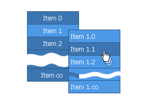

| CONTEXT HELP |
|---|
| Unlimited number of menu items |
|
 Number of menu items is limited only by browser's performance. Neither total number of items nor number of items in menu blocks is limited. Some navigation systems offered on the net have such limitations (i.e. 20 items max. or up to 10 items per block) |